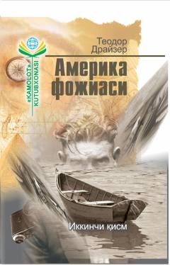

AFBoylik va nafs ortidan quvgan yigitning fojiali taqdiri haqidagi roman.
Teodor Drayzerning ushbu mashhur romanining ikkinchi qismida bosh қаҳрамон Клайд Грифитснинг бой hayot iliqidagi xom xayollari uni qanday qilib mudhish jinoyatga yetaklayotgani hikoya qilinadi. Asarda inson ruhiy holati, jamiyat ta'siri va fojiali taqdir o'tkir badiiy tilda ochib berilgan.